2004.03.25., csütörtök
tomcat
Felborult egy mentõautó Pornóapáti és Horvátlövõ között. Ez nem vicc. Ez egy hír az Origóról. A kocsi tropára ment, sérülés szerencsére csak könnyû, de a települések neveinek hallatán eddig úgy kétmillióan kaptak röhögõgörcsöt. És ráadásul egymás mellett vannak. Az ész megáll. Szegény helyi lakosok, képzeld el, amikor igazoltatja õket a rendõr Pesten.
Apropó, rendõr. Segítettem átvinni pár dobozt az exnek az új helyére. Visszük, visszük, egyszer csak satufékkel, csikorogva blokkol mellettünk egy járõrkocsi, kipattan két bocifejû, és ordítva rohannak felénk.
- jóestétkívánok, ÁLLJANAK CSAK MEG!! Mit visznek, mutassák csak! Na!
Már a nyelvemen volt valami ilyesmi, hogy "mi van, maguk itt a rendõrállam?" vagy "mondja, megvannak már a móri csávók?" de végül azt mondtam:
- Költözünk.
Bocifejû képérõl erre lehervadt az elégedett vigyor, pedig már készült, hátha lesz egy jó kis veréses-földönhúzásos-negyvennyolcórárabevivõs móka. De nem lett.
- Öö, hát akkor... elnézést.
Azzal vissza a kocsiba és el. Tehát ha legközelebb lopni mentek, és megkérdezik, mit visztek, mondjátok hogy költöztök.
Lapozzunk. Én is lapoztam, egy régi Terror News-os kolléga, Hamster oldalát lapozgattam. õ is ilyen sokmindenfélét mûvelõ arc, mint én, csak õ értelmesebb dolgokat csinál, mint a droidok gyûjtése. õ például feltérképezte Budapest megszûnt villamosvonalainak térképét, megírta a történetüket. Nem is ez az érdekes (illetve dehogynem érdekes, csak most nem errõl lesz szó), hanem a régi fényképein kirajzolodó, régi Budapest. Régi? Nem is olyan régi ez.
Mi, tizen-huszonévesek, akik itt élünk ebben a büdös, mocskos, mosolytalan városban, általában azt hisszük, azért ilyen ez, mert az egykor szép várost a háborúban szétbombázták, és ilyen rondán építették újjá. Hát nem... A várost a nyolcvanas évek közepétõl a kilencvenes évek elejéig tették ilyenné. Kivágták a fákat, mindent leaszfaltoztak, eldózerolták a jellegzetes épületeket, és üvegdobozokat tettek a helyükre. Nézzünk csak néhány hetvenes-nyolcvanas évekbeli fényképet Hamster gyûjteményébõl! A jogdíjat majd egy üveg sör képében lerendezzük egyszer.
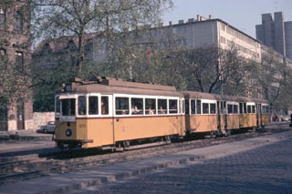
Hol készült ez a kép? Valószínûleg sosem jössz rá, ha meg nem mondom. Ez itt Angyalföld, a XIII. kerület, a Váci út Lehel tér közelében.
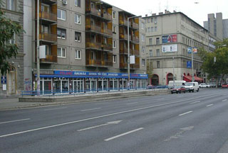
Ez a hely ma ilyen. Hatsávos kvázi-autópálya, és a fákat kiirtották. Néhány még fonnyadozik a szmogban. De ez így modern.
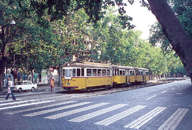
És ez hol van? Talán Budán, a Zugliget felé? Hol van ennyi zöld? Nos...
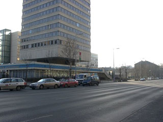
... ez csak 500 méterrel van arrébb, a Dózsa György úti metrómegállónál. A Vízmûvek épülete már az elõzõ képen is ott van, csak takarják a fák. Azok a szemét fák! Jó is, hogy kivágták mindet. És a villamosért sem kár, sokkal szebb a végtelen, sík beton és az autóáradat.
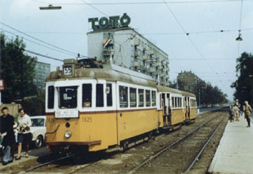
Annak ellenére, hogy Angyalföldön nõttem fel, erre a képre Kõbányát tippeltem. Hát nem - ez is Angyalföld, a Dózsa György út és a Váci út keresztezõdése. Figyeljük csak meg, mennyi fa sorakozik az út mentén!
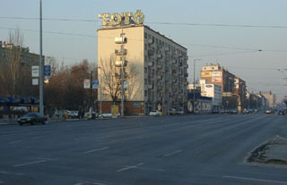
És itt? Én megértem, hogy a villamos nem kell, ha metró is van, meg ugye kell a sok aszfalt az autóknak, de most ez így milyen? És akkor csodálkozunk, hogy a pestiek, olyanok, amilyenek? Kinek van kedve itt mosolyogni?
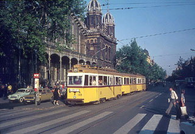
A Nyugati pályaudvar a hetvenes években. Nicsak, a Nagykörút is tele volt fákkal. Most autókkal van tele. Az elõtérben látható fát természetesen már kivágták, most satnya, kiszáradt facsemeték meredeznek ott. Mellesleg azt is érdemes megfigyelni, milyen messzire el lehet látni a Nagykörúton, mert nincs szmog, és nem lep mindent vastagon a korom.
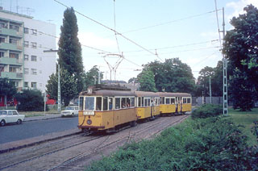
A Lehel tér a templom hátulja felõl régen...
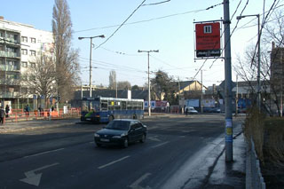
... és ma. Kicsit mintha itt is csökkent volna a zöld... Az autók közönyösen suhannak, nekik mindegy. Akik meg bennük ülnek, nem is értik, hogy nézhet így ki egy város. Talán ha nem erõltették volna az autóforgalom fokozását, hanem meghagyták volna Budapest hangulatos villamosvonalait, nem irtották volna ki a fákat, és nem szélesítették volna ki az összes utat autópályává, most nem nézne ki így.

Világvárosi fények. Azok a csodálatos neonreklámok! Emlékszem, amikor kicsi gyerek voltam, és késõ este jöttünk haza a telekrõl a Trabanttal, ezek a színes, vidám neonok fogadtak bennünket. Lágy, barátságos fényük békéssé, élõvé varázsolta az utcát. Még a farmotoros Ikarus buszokra is emlékszem, amikbõl egy ott fordul be éppen a sarkon. Aztán a neonfények eltûntek, és...
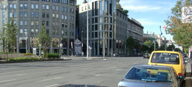
... ez van ma a helyükön. Közönyös, rideg beton és üveg. Autók áradata, fekete kosz, méreg. Ez itt nem Budapest. Ez tõlünk, a magyar embertõl, a pesti embertõl idegen. Az ilyen épületek lehet, hogy passzolnak egy német vagy egy amerikai városba - egyébként tényleg - de Budapest nem ilyen. Amikor az elsõ ilyen "modern" agyrémet idehozták, észre kellett volna venni. Na és hogy nézne ki, ha ezekre még neont is raknánk? Bár ezen a csiricsáré egyenpuccon az se tudna rontani.
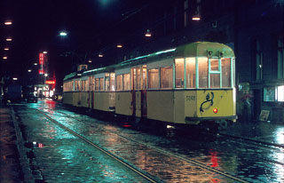
Egy csodálatos esti fénykép a Visegrádi utca végérõl, ahol a Szent István körútba torkollik. Valaha ugyanis az Újlipótvárost is villamosvonalak hálózták be, de ma már egyre kevesebb a villamos, csak a fõútvonalakon hagyják meg a vonalakat.
Hát, ezért ilyen Budapest. Modernizálták, átépítették, s közben észre sem vették, hogy elvették a várostól önmagát. Nem az autókat kellene ajnározni, hanem a város lakóit. Beeresztették ebbe a városba öt autópálya forgalmát, direkt be a központba, aztán most vakarják a fejüket, hogy hogy oldják ezt meg. Mert keskeny az út. Mert nem bírja a terhelést. Mert kevés a Duna-híd. Mert kevéssé élhetõ a fõváros.
Kedves döntéshozó urak! Roppant egyszerû a megoldás. Nem újabb autópályákat kell építeni, és nem kitiltani a rengeteg autót mindenhonnan. Nem kell itt kiszélesíteni semmit. Abból a pénzbõl inkább meg kellene teremteni a kultúrált tömegközlekedés lehetõségét, és nem csak a Nagykörúton. Visszaállítani a villamosok hálózatát. Nem emelni, emelni és emelni a jegyek és bérletek árát, hanem lejjebb vinni. Figyeljék meg, tisztelt döntéshozó urak, ha nem ilyen elszállt áron adnák a jegyeket, sokkal kevesebben bliccelnének. Vajon mi a jobb, ha a 150 forintos jegyárért 5-bõl 3 utas bliccel, ahogy ma teszik, vagy ha a 70 forintos jegyet mind az 5 megveszi? Vissza lehetne állítani a kalauz intézményét is, hogy biztosan megvegyék. A kultúrált, udvarias kalauz intézményét, természetesen.
Mellesleg a szétbarmolt budapesti utcákat is nyugodtan rekultiválhatnák. Az, hogy mindent beborítanak aszfalttal, aztán beleszúrnak néhány szál kórót az e célra kialakított lyukakba, az nem zöldesítés.
És jó lenne, ha észrevennék, micsoda okádék agyrémeket álmodnak a város közepére a számítógépbe belebuzult, speeden élõ juppimérnökök. Érdekelne például, hogyan kapott építési engedélyt a Lehel csarnok. Érdekelne az is, mikor bontják már le a picsába. Ugyanezt kérdezném a plázák nagy részérõl is, a vásári színekre kipingált hipermarketekrõl, a buta beton felüljárókról, és a már említett üveg-beton irodakaszárnyákról. Vegyék már észre, hogy ezek még rosszabbak, mint annak idején a szocreál kockaépületek. Köszönöm a figyelmet.